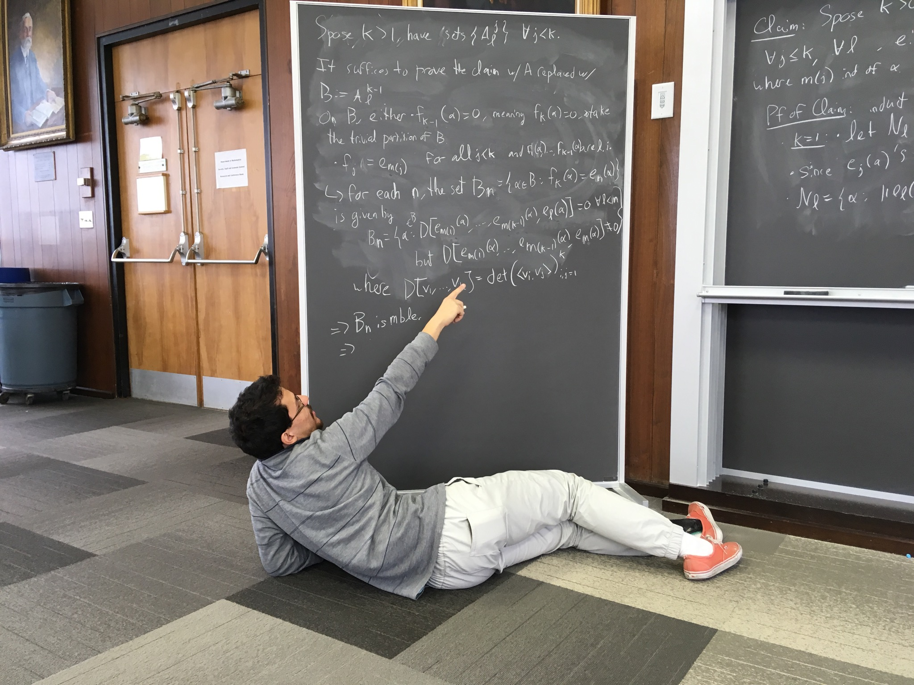
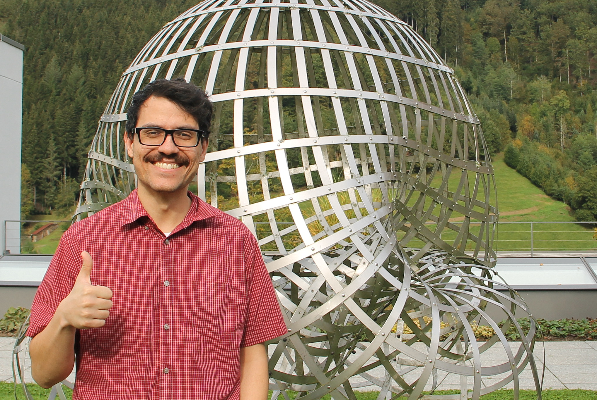

Here is my CV.
Email: [First three letters of first name][Last name].math@gmail.com (e.g. Larry David --> lardavid.math@gmail.com).
About me
- My name is Michel Alexis (pronounced ME-SHELL).
- My research interests are in (two) weighted inequalities for Singular Integrals, Orthogonal Polynomials on the Unit Circle and nonlinear Fourier analysis.
- In January 2026, I will be assistant Professor of Mathematics at Clemson University.
- Currently I am a postdoc at the Hausdorff Center for Mathematics working with Christoph Thiele.
- 2021-2023, I was a postdoc at McMaster University under Eric Sawyer.
- 2016-2021, I did my Phd at UW-Madison under Sergey Denisov.
Research Papers
Smaller Notes/Expository articles